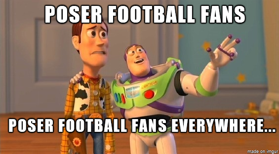

FOOTBALL TRIVIA
Which player has the most Premier League appearances?
Emile Heskey
Jamie Carragher
Garry Speed
Ryan Giggs
Which gaming brand are one of the sponsors of the Champions League?
Playstation
Gameboy
Xbox
Nintendo
How many times did Sir Alex Ferguson win the Premier League?
10
13
7
15
Which club is the only team to go an entire Premier League season unbeaten?
Arsenal
Chelsea
Manchester United
Liverpool
Which player scored the first ever Premier League goal to be screened on Live Tv?
Les Ferdinand
Alan Shearer
Eric Cantona
Teddy Sheringham
In the 2012-2013, what was Eden Hazard sent off for against?
Tackling
Kicking ballboy
Attacking linesman
Headbutting
View Results
And the answers are:
Ryan Giggs
Playstation
13
Arsenal
Teddy Sheringham
Kicking ballboy

Here are the answers, loser. Start studying your football facts.
Ryan Giggs
Playstation
13
Arsenal
Teddy Sheringham
Kicking ballboy